HERO IMAGE
HERO IMAGE
GALLERY
TRAA Trout Hatchery
Keith Wales Memorial Hatchery
The TRAA Trout Hatchery began in the mid-1980's as an outdoor upwelling box located adjacent to Komoka Creek on private property. While it was a simple and rustic affair, the TRAA enjoyed incredible egg hatching and fry survivability rates for several seasons.
Since then we have continued to improved upon the hatchery.
New Hatchery Overview
Currently we hatch both brown trout and brook trout together in the fall through to spring. While the browns are growing in the large circular tank, the brook trout will be in the stainless steel rectangular tank you can see on the right along the back wall.
Rainbow trout eggs are introduced to the upwelling box in the early spring when the browns and brookies are still in the tanks. They will be released before the rainbows are ready to be transferred to the circular growth tank.
Note the same green automatic feeder we've always employed. Some things you just can't improve!


TRAA Trout Releases
Rainbow and Brown Trout
The TRAA starts this process at the Hatchery.
We would like to thank everyone that put their time and effort in, from collecting the eggs, to releasing the fry and all the countless jobs in between.
A trout release starts with all the members and volunteers car-pooling to the TRAA Hatchery site. From there the team nets up the fry from the growth tank and into buckets. Then they journey up the stairs and into a transfer tank which will be taken to the release site. The Frys are then "acclimated" in bags before release to help minimize shock. The trout are released and begin their journey of life.
Judging by the smiles and wet feet of the students, a good time was had by all.


Salmonid Monitoring Project
Stun, Sample, Tag, Release
In the Spring of 2012 when TRAA members and personnel from the Upper Thames River Conservation Authority (UTRCA) waded in for Year 3 of our 5-year Salmonid Tagging and Monitoring Program.
Details


Stream Rehabilitation
Clean it up, but not to much
There are lots of different jobs at each event requiring an array of strengths and capabilities. In other words, everyone is welcome to join in on the fun; whether your young or old, a lightweight or a bull, everyone has a place and a job at a TRAA stream rehabilitation work party!
Selective removal of deadfalls, blowdowns and other in-stream debris
Building in-stream current deflectors

 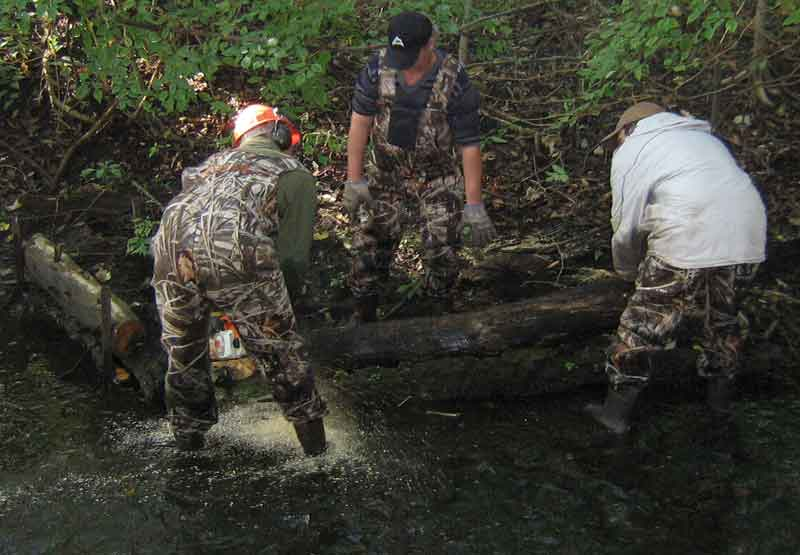
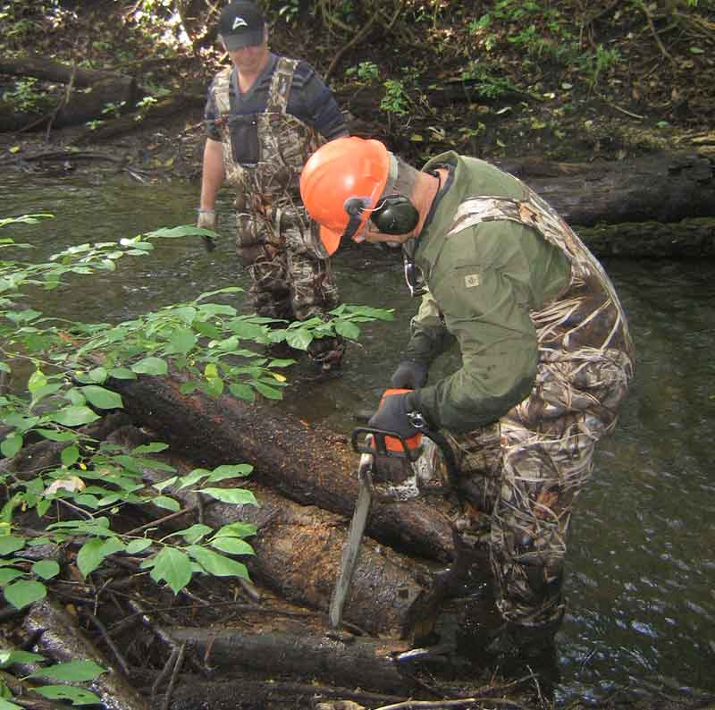
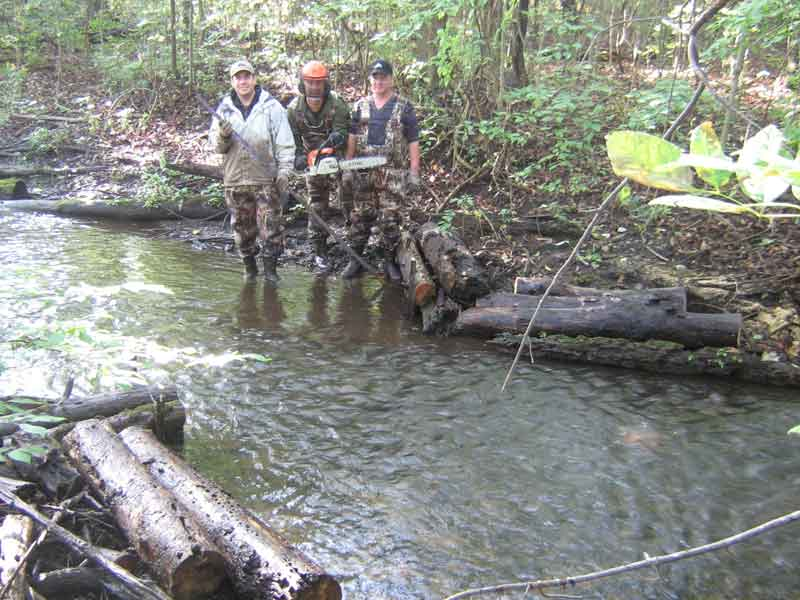
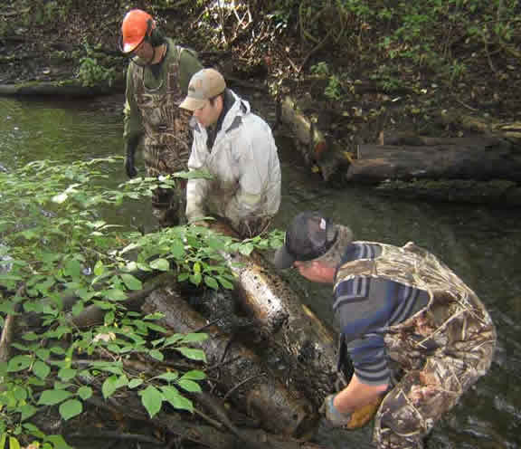
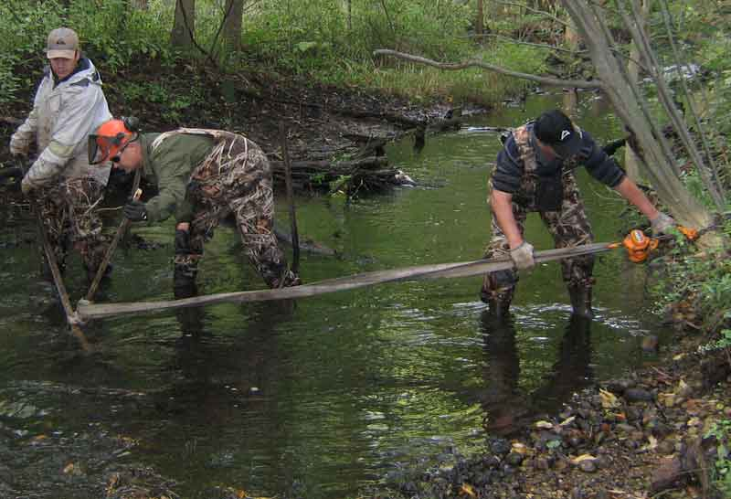
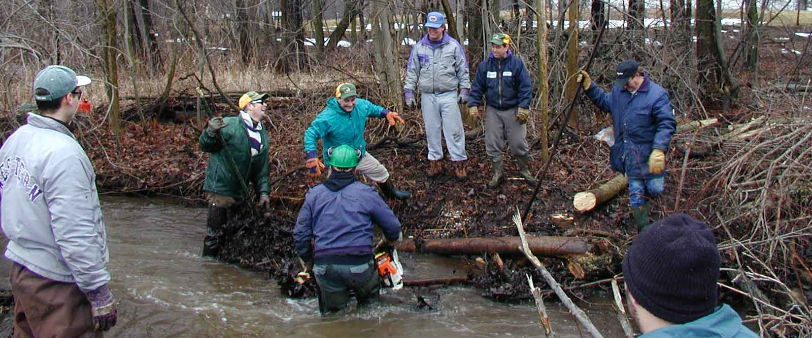
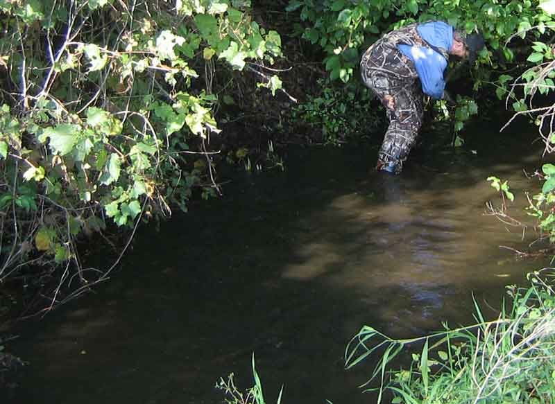
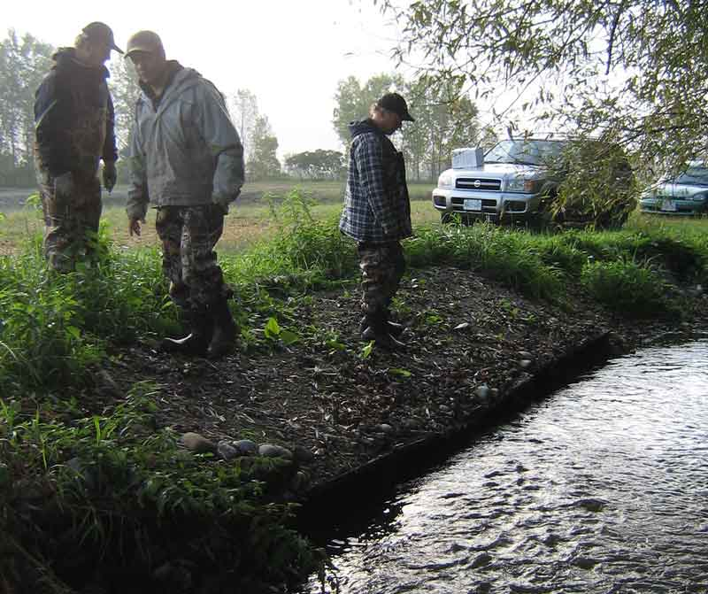
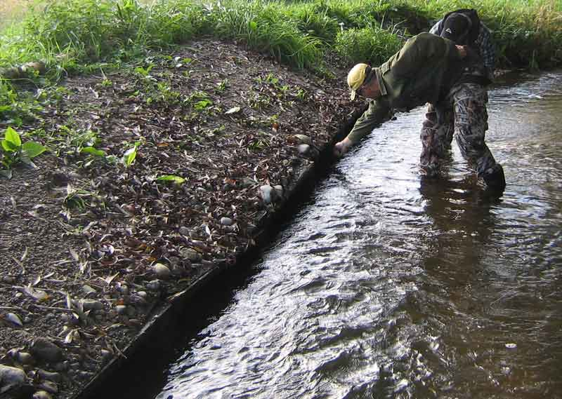
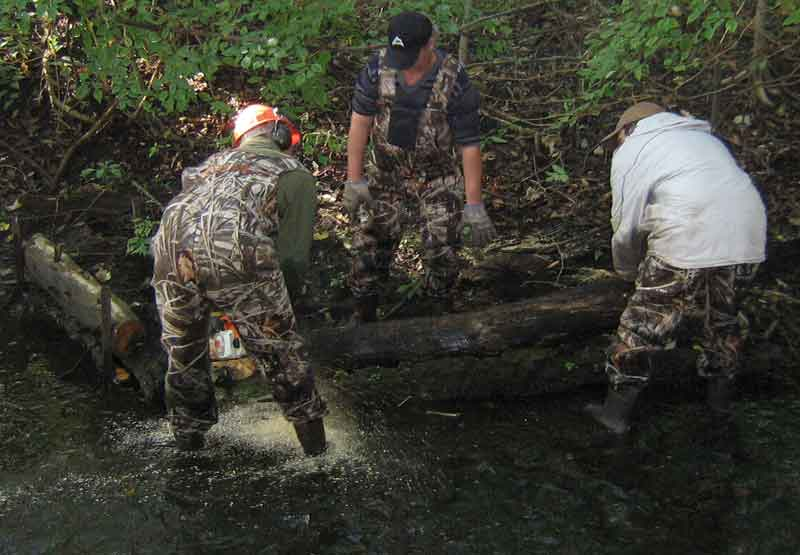
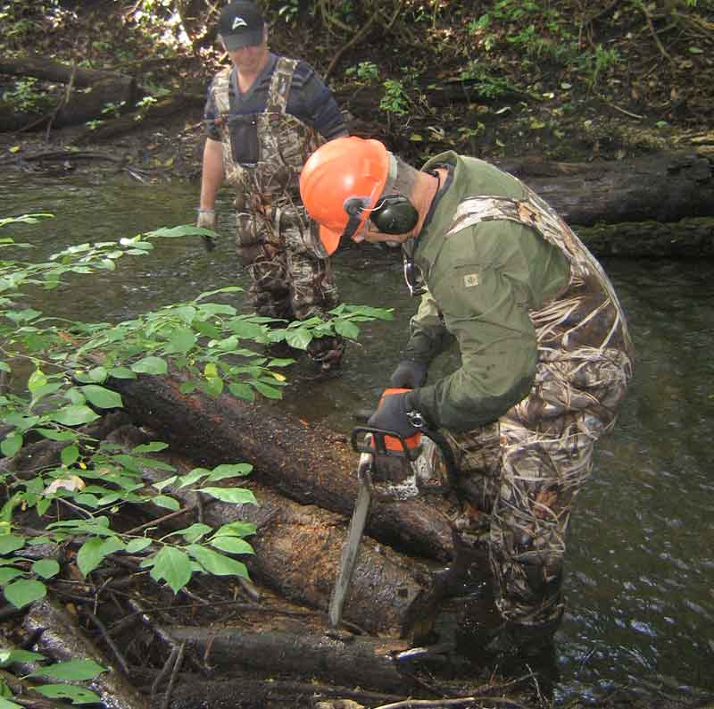
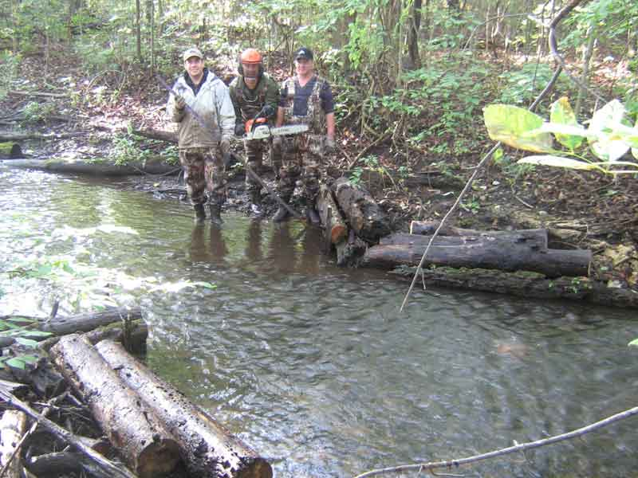
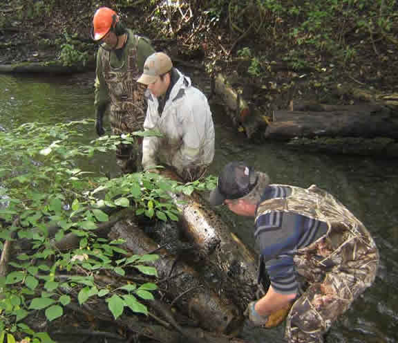
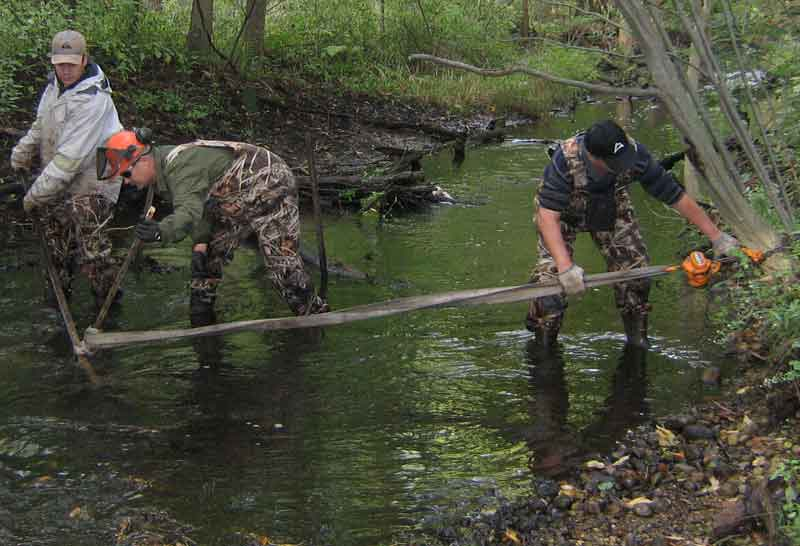
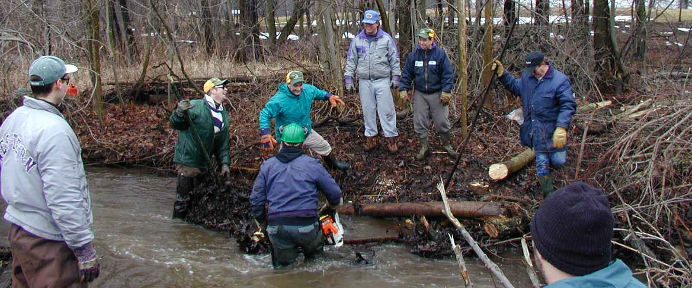
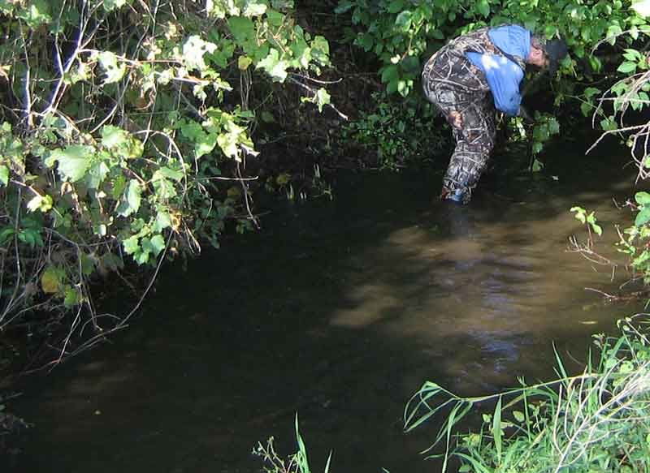
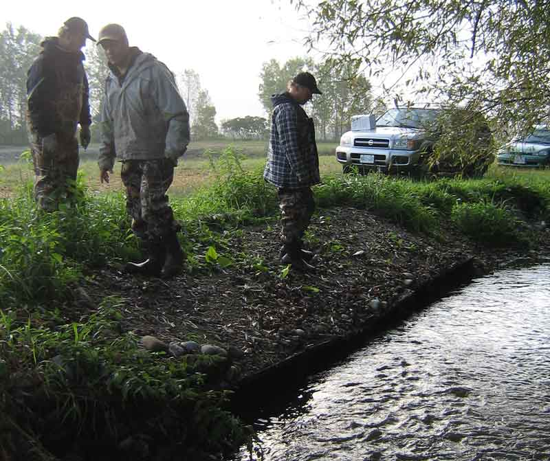
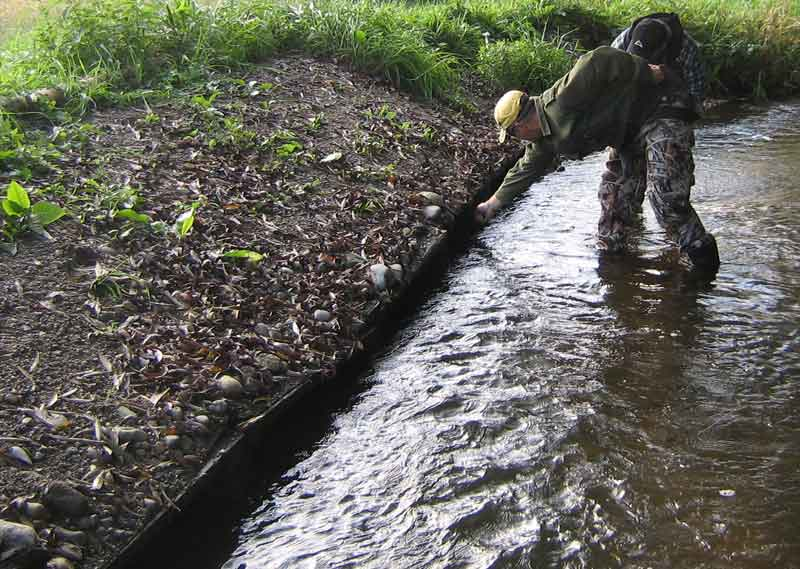


Past Events and Projects
There's always something fun coming
We host and partake in numerous events within our community! Here are some photo highlights of the following events:
River Cleanup's
Annual TRAA Paddle & Fish days
Stream Habitat Work Parties
Family Fishing Days
Angling Sports Barbeque
Please join us for up and coming events! Sign-up for our Newsletter or become a member today.